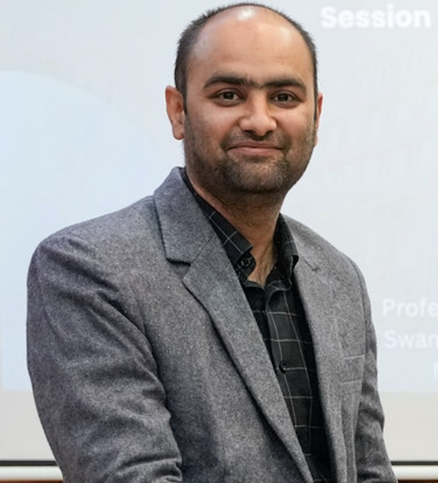

01 · EDUCATION + AI
AI & Educational Innovation
Responsible adoption and governance of artificial intelligence in higher education, technology adoption and new modes of learning.
Explore theme →I work at the intersection of artificial intelligence, educational innovation and engineering education — with a focus on responsible AI adoption, outcome-based education, NLP and applied deep learning.

The profile is organized around coherent themes rather than a chronological CV, making it easier for collaborators, scholars and students to understand the research agenda.
Responsible adoption and governance of artificial intelligence in higher education, technology adoption and new modes of learning.
Explore theme →Outcome-based education, graduate attributes, assessment, accreditation and sustainability-oriented engineering education.
Explore theme →Natural language processing, sentiment and emotion analysis, computer vision and deep-learning approaches to practical research problems.
Explore theme →The research story should communicate not only what has been published, but what problems are being actively investigated.
Explore research themesInstitutional policy, ethical adoption, academic practice and governance frameworks.
Learning outcomes, graduate attributes, assessment evidence and continuous improvement.
Connecting educational innovation with responsible, human-centered uses of AI.
Computer vision, NLP, sentiment analysis and classification across domain problems.
Google Scholar is the intended source of truth for the complete publication record and live citation impact. This prototype links to Scholar while keeping the website fast and stable.
Scientific Reports · SCIE · Scopus Q1
Scientific Reports · SCIE · Scopus Q1
Foresight and STI Governance · Scopus Q2
Equilibrium. Quarterly Journal of Economics and Economic Policy · Scopus Q1
Discover Sustainability · Scopus Q1
Social Sciences & Humanities Open · Scopus Q1
International Journal of Educational Research Open · Scopus Q1
Academic work spanning institutional leadership in India, postdoctoral research in Mexico and international collaborations across research and scholarly engagement.
SKIT Jaipur
Academic & research leadership
Tecnológico de Monterrey
Postdoctoral research
Co-authorship · conferences · collaborative projects
Online Evaluation of Teaching and Learning Outcomes
A NOVUS 2024 research project supported by the Institute for the Future of Education, Tecnológico de Monterrey.
Books, research supervision, edited scholarly work and learning resources form an important part of the academic profile.
Research mentorship spans doctoral and postgraduate work in deep learning, NLP, cloud computing, educational video analytics and related areas.
Selected international talks, special sessions and scholarly leadership represented as an evolving academic activity stream.
AICTE ATAL Faculty Development Programme.
Decision Support Systems · IHCI Conference.
International academic keynote engagement.
Tecnológico de Monterrey and global scholarly collaboration.
International projects, interdisciplinary research, invited talks and collaborations in AI and educational innovation.